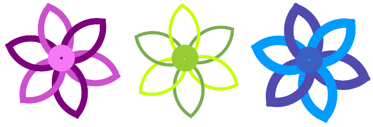

Интересные программы для среды KTurtle
KTurtle. Примеры кода с YouTube
Звезда
Таким способом рисования звезды можно получить только звезду с нечетным количеством лучей.
Формула определения угла поворота: 180 (разворот в противоположную сторону) минус 360 градусов деленные на удвоенное значение количества лучей.
сброс иди 70,120 повтори 9 { вперёд 100 направо 160 } напиши 360/18 иди 200, 120 повтори 5 { вперёд 100 направо 180-36 } напиши 360/10 иди 330, 120 повтори 7 { # вперёд 100 направо 180-360/14 } напиши 360/14 иди 50, 200 $n = спроси "Количество лучей (нечетное)" напиши "Количество лучей: " + $n иди 200, 340 повтори $n { вперёд 100 направо 180-360/($n*2) }
"Неправильная звезда"
Суть в том, что через определенное число повторов $x становится больше числа, из которого его вычитают. В результате первые пары линий образуют угол во внутрь, а последние наружу.
сброс иди 150, 200 $x = 1 повтори 44 { вперёд 100 направо 120 вперёд 100 направо 18 - $x $x = $x + 1 }
Повторение фигур
Особенность: в результате получается большой многоугольник, соответствующий маленькому.
сброс $l = 3 # стороны $line = 40 # длина стороны для $a = 1 до 10 { повтори $l/2 { повтори $a { повтори $l { вперёд $line налево 360/$l } вперёд $line } налево 360/$l } }
Как получить фигуры с заливкой
 В KTurtle нет команды, которая позволяла бы заливать замкнутую область, т.е. "рисовать" фигуру с заливкой. Чтобы все-таки получить такую фигуру можно придумать различные хитрости.
В KTurtle нет команды, которая позволяла бы заливать замкнутую область, т.е. "рисовать" фигуру с заливкой. Чтобы все-таки получить такую фигуру можно придумать различные хитрости.
Если сильно увеличить толщину пера и задать спрайту движение вперед или назад, то легко можно получить прямоугольник или квадрат. Иные, "залитые" таким образом, фигуры получить намного сложнее.
Один из способов - это "нарисовать" прямоугольник, затем "зарисовать" лишние части белыми линиями.
Так, например, в примере ниже залитый треугольник получается следующим образом:
- Рисуется прямоугольник (увеличивается толщина пера, чертится небольшая линия).
- Цвет пера меняется на белый и начинают рисоваться треугольники. Каждый следующий увеличивается так, чтобы описывать предыдущий. Внутри белых треугольников остается цветная область в виде треугольника.
Аналогично треугольнику создается круг. Только здесь вместо треугольников, рисуются увеличивающиеся белые окружности.
Проблема в том, что таким образом нельзя создать две близко расположенные фигуры. Белые "рамки" будут замазывать предыдущую.
сброс направление 90 иди 175, 185 толщина_пера 100 цвет_пера 75,155,50 вперёд 50 цвет_пера 255,255,255 толщина_пера 20 $x = 130 $y = 240 $l = 140 повтори 5 { иди $x, $y повтори 3 { вперёд $l налево 120 } $x = $x - 20 $y = $y + 10 $l = $l + 40 } иди 195,310 толщина_пера 150 цвет_пера 0,125,255 вперёд 10 иди 325,75 толщина_пера 75 цвет_пера 255,225,50 вперёд 10 цвет_пера 255,255,255 толщина_пера 10 $x = 330 $y = 115 $l = 6 повтори 5 { иди $x, $y повтори 36 { вперёд $l налево 10 } $x = $x - 2 $y = $y + 4 $l = $l + 1 }
| Прикрепленный файл | Размер |
|---|---|
| filling.turtle | 691 байт |
Программа "Светофор"
Описание работы программы
- Черепаха рисует на холсте три окружности по вертикали.
- В каждой окружности рисует короткую толстую черную линию, похожую на квадрат с заливкой. Также прорисовывается ножка светофора.
- Пользователю программы пять раз задаются вопросы в случайном порядке: "На какой цвет надо стоять?", "На какой цвет надо приготовиться?", "На какой цвет надо идти?".
- В текстовом поле диалогового окна пользователь должен вписать ответ: "Красный", "Желтый" или "Зеленый".
- Если пользователь дал правильный ответ, то черепаха закрашивает на светофоре соответствующий квадрат этим цветом.
- Если пользователь дал неправильный ответ, то появляется диалоговое окно с сообщением об ошибке и правильным ответом.
- В конце на холсте выводится оценка ответов пользователя, которая зависит от количества правильных ответов (от 0 до 5).
Создание программы
Светофор
Светофор состоит из трех окружностей, отличающихся между собой только координатой y:
сброс толщина_пера 3 иди 170, 100 повтори 36 { вперёд 5 направо 10 } иди 170, 159 повтори 36 { вперёд 5 направо 10 } иди 170, 218 повтори 36 { вперёд 5 направо 10 }
Далее рисуем три квадрата в окружностях с помощью очень толстой линии:
толщина_пера 40 назад 1 иди 198, 156 назад 1 иди 198, 215 назад 1 иди 199, 253 толщина_пера 10 назад 100 В конце ножка светофора: толщина_пера 10 назад 100
"Включение" и "выключение" светофора
Программа должна уметь менять цвет любого из трех черных квадратов на соответствующий ему красный, желтый или зеленый. Поскольку изменение цвета должно происходить в результате определенных действий пользователя и несколько раз, то лучше оформить "включение-выключение" определенных "ламп" с помощью функций:
выучи красный { иди 198, 98 цвет_пера 255,0,0 толщина_пера 40 назад 1 цвет_пера 0,0,0 иди 198, 156 назад 1 иди 198, 215 назад 1 } выучи желтый { иди 198, 98 толщина_пера 40 назад 1 цвет_пера 255,255,0 иди 198, 156 назад 1 цвет_пера 0,0,0 иди 198, 215 назад 1 } выучи зеленый { иди 198, 98 толщина_пера 40 назад 1 иди 198, 156 назад 1 цвет_пера 0,255,0 иди 198, 215 назад 1 цвет_пера 0,0,0 }
Обратите внимание, в каждой функции предусмотрено закрашивание черным ранее окрашенных в иные цвета квадратов.
Диалог с пользователем
$оценка = 0 повтори 5 { $число = случайное 0.5,3.5 $число = округли $число если $число == 1 { $ответ = спроси "На какой цвет надо стоять?" если $ответ == "Красный" { красный $оценка = $оценка + 1 } иначе { сообщение "Не правильно. Стоять нужно на красный цвет!" } } если $число == 2 { $ответ = спроси "На какой цвет надо приготовиться?" если $ответ == "Желтый" { желтый $оценка = $оценка + 1 } иначе { сообщение "Не правильно. Приготовиться нужно на желтый цвет!" } } если $число == 3 { $ответ = спроси "На какой цвет надо идти?" если $ответ == "Зеленый" { зеленый $оценка = $оценка + 1 } иначе { сообщение "Не правильно. Идти нужно на зеленый цвет!" } } } иди 250,250 напиши "Ваша оценка: " + $оценка
В переменной $оценка храним количество правильных ответов пользователя.
Чтобы программ задавала вопросы в случайном порядке, используем переменную $число, в которой хранится случайное число от 0.5 до 3.5 округленное до целого, т.е. 1, 2 или 3.
Рисование цветка
Меняя значения переменных, можно получать различные цветки.
Смена цвета лепестков чередуется. Для этого используются флаги. Начальное значение флагов определяется в зависимости от значений переменных $r, $g, $b.
сброс толщина_пера 10 $x = 200 # координаты центра цветка $y = 200 # ... $a = 50 # нач.угол для первого лепестка $l = 3 # влияет на длину лепестка $r = 125 # цвет $g = 0 # ... $b = 125 # ... если $r < 128 { # установка флагов $fr = 1 } иначе { $fr = 0 } если $g < 128 { $fg = 1 } иначе { $fg = 0 } если $b < 128 { $fb = 1 } иначе { $fb = 0 } выучи лепесток { # на самом деле поллепестка повтори 36 { направо 3 вперёд $l } } выучи цвет $d { # значение $d влияет на контраст, # не должено быть больше 128 если $fr == 1 { $r = $r + $d $fr = 0 } иначе { $r = $r - $d $fr = 1 } если $fg == 1 { $g = $g + $d $fg = 0 } иначе { $g = $g - $d $fg = 1 } если $fb == 1 { $b = $b + $d $fb = 0 } иначе { $b = $b - $d $fb = 1 } цвет_пера $r,$g,$b } ################################# повтори 6 { цвет 80 иди $x,$y нпр $a лепесток нпр $a+180 лепесток $a = $a+60 } цвет 120 нпр 0 $x = $x+$l*3 $y = $y-$l-1 иди $x,$y толщина_пера $l*6 повтори 72 { вперёд 1 налево 5 } иди 0,0

| Прикрепленный файл | Размер |
|---|---|
| flower.turtle | 1.34 кб |